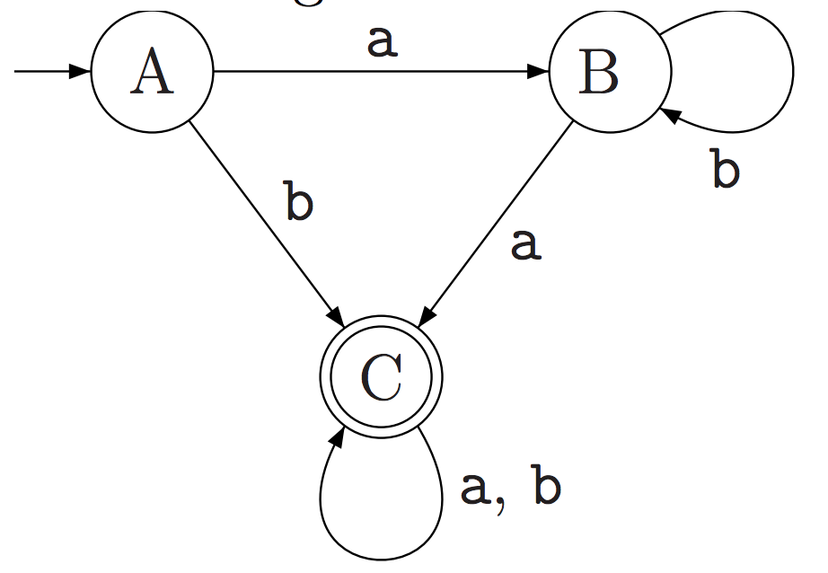
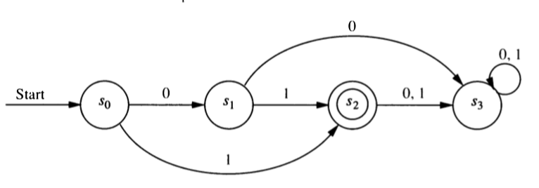
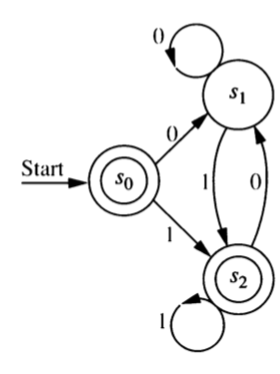

7 DFA/NFA to Regular Expression
7.1 GNFA (Generalied NFA)
A GNFA (Generalized NFA) is like an NFA but the edges may be labeled with any regular expression. One way of obtaining a regular expression from a DFA or NFA uses an algorithm that works with GNFAs.
7.2 Algorithm for converting DFA/NFA to Regular Expression
Suppose we want to find an equivalent regular expression for some DFA or NFA. Here is an algorithm to do so.
Modify the the original machine.
- Add a new start state with a \(\lambda\) transition to the old start state. (We can skip this step if the start state is already lonely (has in-degree 0).)
- Add a new final state with a \(\lambda\) transition from all old final states. (We can skip this step if there is exactly one final state and it has out-degree 0.)
- The new final state will be the only final state.
- Replace mutliple edges between any pair of states \(A\) and \(B\) with one edge labeled with the union of the labels of the original edges. [Example \(A \stackrel{0,1}{\to} B\) becomes \(A \stackrel{0 \cup 1}{\to} B\).]
Pick an internal state (not the start state or the final state) to “rip out”. Let’s call that state \(R\).
- If \(A\) doesn’t have a self-loop, replace every \(A \stackrel{r_{\mathrm{in}}}{\to} R \stackrel{r_{\mathrm{out}}} \to B\) with \(A \stackrel{(r_{\mathrm{in}} r_{\mathrm{out}})}{\longrightarrow}B\).
- If \(A\) has a self-loop labeled \(r_{\mathrm{self}}\), replace every \(A \stackrel{r_{\mathrm{in}}}{\to} R \stackrel{r_{\mathrm{out}}} \to B\) with \(A \stackrel{(r_{\mathrm{in}} r_{\mathrm{self}}^* r_{\mathrm{out}})}{\longrightarrow} B\).
- If this results in multiple edges between two states \(A\) and \(B\), replace them with one edge labeled with the union of their labels.
Repeat step 2 until the only states left are the start state and the final state. There will be only one transition remaining, and its label will be a regular expression for the language recognized by the original DFA or NFA.
7.3 Examples
- Systematically convert this DFA into an equivalent regular expression.

- Systematically convert this DFA into an equivalent regular expression.

- Systematically convert this DFA into an equivalent regular expression.

You can find additional worked examples online at places like
- https://courses.cs.washington.edu/courses/cse311/14sp/kleene.pdf
- https://courses.engr.illinois.edu/cs374/sp2019/extra_notes/01_nfa_to_reg.pdf
But note that sometimes the notation isn’t quite the same.
- \(\varepsilon\) is sometimes used for what we have called \(\lambda\).
- \(+\) is sometimes used in place of \(\cup\).
7.4 Review problems
Show that if \(A\) is a regular language, then \(\overline{A}\) is also a regular language.
Show that if \(A\) and \(B\) are regular languages, then \(A \;\cap\;B\) is also a regular language.
Convert the machines on this sheet to equivalent regular grammars.